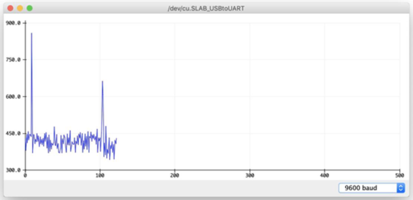

Bài học 7: Vỗ tay thay đổi màu đèn LED¶
Mục tiêu¶
Tìm hiểu về cảm biến âm thanh và ứng dụng vào bật tắt đèn LED RGB tích hợp trên xController.
Kiến thức mới¶
Cảm biến âm thanh
Cảm biến âm thanh có thể dùng để phát hiện và đo cường độ âm thanh của môi trường xung quanh. Chúng ta có thể ứng dụng cảm biến này để điều khiển đèn LED RGB bằng tiếng vỗ tay.
Vẽ biểu đồ dữ liệu bằng cửa sổ Serial Plotter
Cửa sổ Serial Plotter có chức năng tương tự như cửa sổ Serial Monitor, cho phép bạn có thể quan sát các giá trị đo được trong chương trình, tuy nhiên Serial Plotter hỗ trợ biểu diễn dưới dạng biểu đồ theo thời gian thực. Điều này rất hữu ích đối với những dữ liệu cần được quan sát trực quan.
{kind=link}
Bạn có thể mở cửa sổ Serial Plotter bằng cách vào menu Tools > Serial Plotter.
{kind=link}
Thiết bị cần sử dụng¶

Kết nối phần cứng¶

Viết chương trình¶
Mở phần mềm Arduino IDE.
Nếu bạn chưa cài đặt thư viện cho xController thì tham khảo bài học số 4 để tải và cài đặt thư viện vào Arduino IDE.
Copy đoạn code sau, click vào nút Verify để kiểm tra lỗi chương trình. Sau khi biên dịch không báo lỗi, bạn có thể nạp đoạn code vào board.
#include <xcontroller.h>
XController xcon;
int soundSensorPin = A4_1;
int sensorValue = 0;
int LEDState = 0;
void setup() {
Serial.begin(9600);
}
void loop(){
// đọc giá trị cảm biến
sensorValue = analogRead(soundSensorPin);
// in ra giá trị cửa sổ Serial đọc được
Serial.println(sensorValue);
// nếu giá trị cảm biến lớn hơn 1000
// thì đảo trạng thái bật tắt của đèn LED
if (sensorValue > 1000){
LEDState = 1 - LEDState;
delay(300);
}
// bật tắt đèn LED RGB dựa vào trạng thái đã được xử lý
if (LEDState == 0){
xcon.showLED(0, 0, 0, 0);
} else {
xcon.showLED(0, 255, 0, 0);
}
delay(1);
}
Sau khi chạy chương trình, bạn có thể xem giá trị của cảm biến âm thanh từ cửa sổ Serial Monitor, bằng cách vào mục Tools -> Serial Plotter. Bạn thử vỗ tay phát ra tiếng động hoặc chạm nhẹ vào microphone của cảm biến để thấy sự thay đổi của giá trị cường độ âm thanh bằng biểu đồ.
{kind=link}
Giải thích chương trình¶
Các câu lệnh include thư viện, khai báo đối tượng XController và các biến sẽ tương tự như các bài trước. Tuy nhiên, chúng ta cần để ý đoạn code đảo trạng thái của đèn LED RGB như sau:
// nếu giá trị cảm biến lớn hơn 1000
// thì đảo trạng thái bật tắt của đèn LED
if (sensorValue > 1000){
LEDState = 1 - LEDState;
delay(300);
}
Câu lệnh if sẽ kiểm tra kết quả đo được có lớn hơn 1000 hay không, nếu có thì mới đảo trạng thái đèn LED. Giá trị 1000 ở đây gọi là ngưỡng, do chúng ta tự đo và ấn định. Trong trường hợp này, nếu chúng ta để ngưỡng càng nhỏ thì chương trình sẽ chạy càng nhạy.
LEDState = 1 - LEDState;
Đảo trạng thái LED (LEDState) đơn giản từ 0 thành 1 hoặc từ 1 thành 0: Nếu LEDState đang có giá trị là 0 thì LEDState mới = 1 - 0, sẽ thành 1. Ngược lại, nếu LEDState đang là 1 thì LEDState mới (= 1 - 1) sẽ thành 0.
delay(300);
Sau khi xử lý xong, chúng ta cần phải tạm dừng chương trình trong một thời gian ngắn để tránh trường hợp do chương trình chạy quá nhanh, lúc đó tiếng động truyền vào kéo dài chưa kịp dứt thì sẽ bị xử lý nhiều lần, tạo ra kết quả bật tắt không mong muốn.
// bật tắt đèn LED RGB dựa vào trạng thái đã được xử lý
if (LEDState == 0){
xcon.showLED(0, 0, 0, 0);
} else {
xcon.showLED(0, 255, 0, 0);
}
Cuối vòng lặp, chúng ta sẽ dùng cấu trúc if ... else ... để bật tắt đèn LED, tùy vào giá trị của biến LEDState. Hàm để bật tắt LED RGB (thực chất là thay đổi màu vì ta chỉ sử dụng màu đỏ) là hàm showLED() đã được giải thích ở bài học trước.
Khi chương trình chạy, đèn LED sẽ thay đổi màu nếu phát hiện âm thanh của môi trường xung quanh đủ lớn.